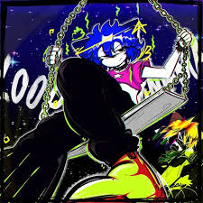
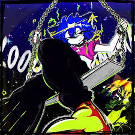
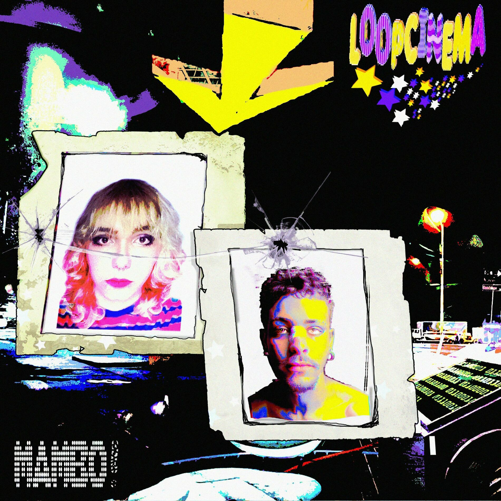
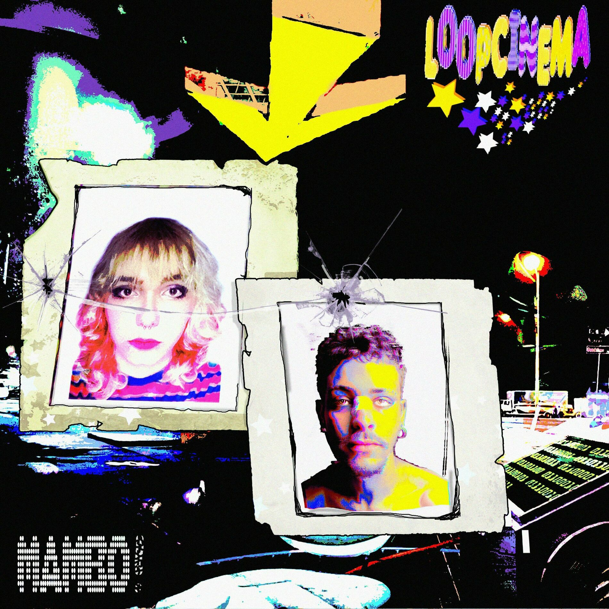

Deseja nos contatar? Aqui estão algumas formas que podem te interessar.
Importante! Leia.
Esse email não é real, assim como o site todo. É um trabalho de escola da aula de front end na qual eu decidi usar a artista musical Loopcinema como tema do site. Se você clicar no nome na lista das redes sociais, você vai ser direcionado pra pagina REAL da artista, menos o email por que ele é inventado. Se você se interessar por musicas do genero Hyperpop/Hip-hop Alternativo e indie, recomendo que dê uma olhada. Ela comecou recentemente, mas já tem um grande nome na cena underground. Clique na lista para acessar a pagina desejada.

 


 
